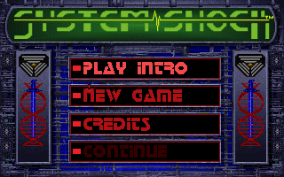
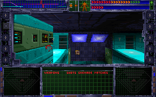

名稱：網路奇兵1／網絡奇兵1 (System Shock，英文版)
簡介：Looking Glass 1994年出品的第一人稱動作冒險遊戲，由Origin代理發行，台灣則由
智冠代理進口。1995年再推出「光碟加強版（Enhanced CD）」 [待補]。


備註：本版為光碟加強版F1.6C／F1.6S版。
保護：磁片版無保護，光碟加強版為光碟
備註：光碟加強版安裝請執行INSTALO.BAT。
檔案：shock-disk.rar = F1.5S磁片版